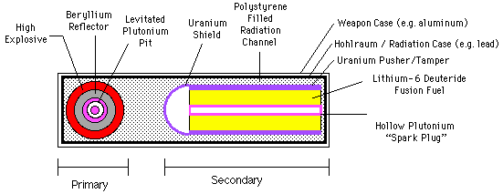

This material may be excerpted, quoted, or distributed freely provided that attribution to the author (Carey Sublette), the document name (Nuclear Weapons Frequently Asked Questions) and this copyright notice is clearly preserved, and the URL of this website is included: Nuclear Weapon Archive
Only authorized host sites may make this document publicly available on the Internet through the World Wide Web, anonymous FTP, or other means.
Unauthorized host sites are expressly forbidden.
The only authorized host site for the NWFAQ in English is the Nuclear Weapon Archive (nuclearweaponarchive)
In the previous subsection (4.3) I discussed weapon designs that employ the easy-to-ignite D-T reaction. In principle large fusion explosions could be created using this reaction, if sufficient tritium were available. The fact that tritium must be made through neutron reactions (or other even more expensive charged particle reactions) makes its cost prohibitively high for this. A neutron expended in breeding Pu-239 or U-233 would make ten times as much energy available for a nuclear explosion. Even if the fusion neutrons were used efficiently in causing U-238 fast fission (requiring a massive fusion tamper as in the Alarm Clock/Layer Cake design), the energy gain would still not be dramatically greater than breeding fissile material directly. For at most a modest energy gain, this design would have considerable penalties. First, there is the added complexity compared to a pure fission bomb. Second, and more important, is the natural decay of tritium. If the weapon is intended to be kept in stockpile rather than used immediately (which fortunately, has been the case since 1945), then maintaining a given tritium inventory means duplicating the initial investment in tritium production every 17.8 years (sic, this is not a typo, the half-life is 12.33 years but continuously replacing decayed tritium requires duplicating production over 12.33/ln 2 years).
4.4.1 Development of Thermonuclear Weapon Concepts
The design and functioning of these weapons is complex, I have decided to introduce the physics and design of these weapons by discussing the evolution of thermonuclear weapon design concepts, instead of plunging directly in to a description of modern hydrogen bomb design principles. This has the advantage of allowing the introduction of important design ideas piecemeal, within a framework which gives the reader a sense of the significance of each.
4.4.1.1 Early Work
In the summer of 1942, quite early in the development of nuclear weapons (3 years before the first fission weapon test), the possibility was noticed of igniting self-supporting thermonuclear combustion in pure deuterium, a naturally available and comparatively cheap material. If the D-D reaction could be initiated then explosions of practically unlimited power could be created inexpensively. An additional possibility was that such weapons might be much lighter than other designs of comparable yield.
Preliminary investigation made the idea seem promising, but more detailed analysis soon showed that the feasibility of a self-sustaining D+D reaction in deuterium at achievable densities was marginal at best. In fact the better part of a decade (until mid 1950) was spent refining calculations to conclusively determine its feasibility one way or the other. In the end, it was shown to be impossible under the conditions then deemed to be achievable.
It was not until early 1951 that a series of conceptual breakthroughs made by Stanislaw Ulam and Edward Teller discovered a way of creating the necessary conditions for solving the "ignition problem". These discoveries led to the detonation of the first hydrogen bomb in November 1952, some 20 months later.
4.4.1.2 The Ignition Problem
Stated as generally as possible, the ignition problem is finding a means of
achieving the following requirements.
1. Creating conditions so that the fusion reaction proceeds at a high rate;
2. Maintaining these conditions for a period of time, such that:
3. The total energy produced (rate*time) exceeds the externally supplied
energy consumed in creating and maintaining the reaction conditions.
The formula for the rate of a fusion reaction between two types of particles
A and B is:
R = N_A * N_B * f_AB(T)
where R is reactions/sec-cm^3, N_A and N_B are the particle densities of A
and B in particles/cm^3, and f_AB(T) is a function the gives the reaction
cross section (in cm^2) at temperature T. Since particle energies at
equilibrium follow a Maxwellian distribution, the function is actually an
average of the cross section values for specific energies over the
distribution. In the fusion physics literature, T is normally given in
electron volts (eV or KeV). One electron volt of temperature is equal to
11,606 degrees K.
For a given fuel mixture both N_A and N_B are proportional to density. Since the rate at a given temperature is determined by the product of N-A and N_B, it is proportional to the square of the density. A high density can thus greatly enhance the reaction rate.
Note that the effect on the reaction rate in a fixed quantity of fusion fuel only increases linearly with density. This because while the reaction rate (per unit volume) goes up as the square of density, the actual volume decreases linearly with density offsetting this.
The reaction rate is highly dependent on temperature also, as can be seen from the table below:
Reaction Cross Sections (cm^2) T (KeV) D/T D/D D/He-3 1.0 5.5x10^-21 1.5x10^-22 3 x10^-26 2.0 2.6x10^-19 5.4x10^-21 1.4x10^-23 5.0 1.3x10^-17 1.8x10^-19 6.7x10^-21 6.0 2.6x10^-17 2.3x10^-19 3.3x10^-20 7.0 4.1x10^-17 3.5x10^-19 5.3x10^-20 8.0 6.0x10^-17 5.0x10^-19 8.0x10^-20 9.0 8.2x10^-17 6.7x10^-19 1.3x10^-19 10.0 1.1x10^-16 1.2x10^-18 2.3x10^-19 15.0 2.6x10^-16 1.9x10^-18 1.3x10^-18 20.0 4.2x10^-16 5.2x10^-18 3.8x10^-18 30.0 6.6x10^-16 6.3x10^-18 1.0x10^-17 40.0 7.9x10^-16 1.0x10^-17 2.3x10^-17 50.0 8.7x10^-16 2.1x10^-17 5.4x10^-17
The primary means by which energy is lost from a fully ionized plasma is through bremsstrahlung radiation. The rate of energy emission per unit volume is energy emitted is:
e = 1.42 x 10^-27 Z^3 n_i^2 T^0.5 ergs/cm^3-sec
where n_i is the ion density, Z is the ion atomic number, and T is in degrees K.
Note that the dependence on density for bremsstrahlung emission is the same as that of the fusion reaction rate. Its increase with temperature is comparatively sluggish, varying only with the square root.
4.4.1.3 The Classical Super
The original concept for creating a thermonuclear explosion was to create a thermonuclear combustion wave in a mass of liquid deuterium. The idea was to heat a portion of the mass to ignition conditions with an atomic bomb. The energy released by the burning region would be sufficient to heat an adjacent region to the point of ignition, allowing the region of burning to spread throughout the mass.
This process has been described as "thermonuclear detonation" but "thermonuclear combustion" is more accurate. Unlike a high explosive, the fusion reaction will not go to completion in a narrow zone behind the ignition front, instead the fuel would continue to burn until quenched by the expansion of the fuel mass. Since a large mass takes longer to expand than a small one, it seemed clear that such a bomb must be fairly large for he combustion to be reasonably efficient (one cubic meter of deuterium yielding 10 megatons was the nominal figure used).
Developing this approach (originally called the Super, later the Classical Super) actually required solving two different ignition problems: establishing the initial ignition conditions, and determining whether the combustion wave would be self-supporting once established.
Despite the enormous temperatures and energy densities in a fission bomb, the first problem was not straightforward. Some 80% of the energy in an exploding bomb core is in the form of soft x-rays, but ionized hydrogen at normal densities is virtually transparent to this high temperature radiation (the mean free path is measured in hundreds of meters). The thermal radiation escaping from the bomb core thus cannot heat a localized region of deuterium to ignition. Most the remaining energy is present in the form of kinetic energy of ions and electrons. This energy, transferred as a shock wave by the expanding bomb core, was a possibility. However the primary means to heat the fuel that was chosen seems to have been the neutron flux from the core, which carried a mere 1% or so of the explosion energy. The reason was that the neutrons travel very rapidly and quickly deposit their energy in a manageably small region (roughly 8 cm thick) through moderation by the hydrogen. Very large explosions were required for sufficient heating to occur (hundreds of kilotons).
The second problem, determining whether thermonuclear combustion would propagate and lead to efficient combustion, was very difficult to solve. A large number of physical processes are involved: questions of energy production rates, energy transport by various reaction products (different types of ions and neutrons of various energies), energy transport by electrons, energy loss from photons through bremsstrahlung and inverse Compton scattering, etc.
Early on it became apparent that direct heating of deuterium could not establish ignition conditions, even fission bombs are not hot enough for this. Adding extremely costly tritium to the ignition zone as a "starter fuel" was required, the easily combustible tritium could in principal raise the fuel to deuterium-deuterium fusion temperatures. Since it is impractical to use tritium as the principal fusion fuel, it was essential that the detonation wave be able to propagate itself into pure deuterium. Determining whether or not this was even possible proved extremely difficult.
Study of the problem began during WWII, and continued until late 1950. The basic problems were the balance of energy production to energy loss, and spread of combustion conditions. In the burning zone, energy emitted as bremsstrahlung (and to a lesser extent the inverse Compton effect) was effectively lost to the fuel mass since it was very unlikely to be reabsorbed (the MFP for these high temperature photons was measured in kilometers!). The fuel mass was thus out of equilibrium with thermal radiation. To make the ratio between production and loss favorable, and the rate of deuterium combustion reasonably rapid, very high temperatures were needed. The energy loss of course tended to damp the temperature rise, making the conditions difficult to achieve and maintain.
The fact that most of the fusion energy was released as neutron kinetic energy was no doubt problematic also. This meant that most of the energy was deposited in a fairly large region outside of the combustion zone, making propagation of the zone more difficult.
Solving these problems required intensive numerical computations to simulate the propagation and combustion process. As computations became more refined during 1949-1950 the ignition problem became worse, requiring ever larger amounts of tritium to reach ignition conditions (eventually it was estimated that 3-5 kilograms were needed - basically filling the entire ignition zone with a 50:50 D-T mixture, corresponding to lost production of 220-500 kg of plutonium). But even this did not solve the propagation and combustion efficiency questions.
Eventually in mid-1950 (after 8 years of study) it became clear that despite large amounts of tritium starter fuel, at best very low combustion efficiencies could be obtained with bombs of reasonable size. The reaction cross sections of the deuterium-deuterium reactions were simply too low by a factor of 2 to 3 to make a Classical Super feasible.
4.4.1.4 The Teller-Ulam Design
Here the matter rested until January 1951. No viable technical approach for exploding deuterium was available. At this time Stanislaw Ulam was considering ways of improving fission bombs. Since these weapons generally rely on compression, he contemplated whether the energy of a small fission bomb could be used to compress a larger amount of fissile material. Since the energy of fissile material exceeds that of a conventional explosive by six orders of magnitude, if this energy could be harnessed to drive an implosion much more rapid compression and much higher densities could be achieved.
Very quickly he realized that this idea could be extended to compressing deuterium, to make a fusion explosion possible. This is the origin of the key ideas of separation and staging: separating fuels into physically discrete units, and using the explosion of one stage to drive the second stage.
It is not immediately evident from a cursory examination of the physics of thermonuclear detonation waves that this is really of any help. At a constant temperature, the reaction rate in a fusion fuel mass increases linearly with compression, but so does the emission rate of thermal energy through bremsstrahlung. The balance of energy production to energy loss remains the same. For this reason Teller had long regarded compression as being futile for enhancing the classical Super.
However not all physical factors scale similarly. While the rates of energy generation and emission are linear with density, the scale of the whole system varies inversely with the cube root of density just as it does in fission cores. Compressing the fuel by a factor of 1000 (for example), reduces the dimensions by a factor of 10. This has several important consequences. First, the fuel has greater opportunity to burn before disassembly. Second, the MFPs for neutrons decrease by a factor of 1000, and for photons by a factor of a million. Neutron heating thus occurs in a narrower zone, assisting the propagation of the burn region, while photon absorption becomes an important heating mechanism - effectively eliminating bremsstrahlung loss.
The net result is that compression does indeed make a big difference in the feasibility of propagating a thermonuclear combustion wave.
Ulam was the key figure involved with the detailed computations that killed the Classical Super concept, he was thus well positioned to realize the benefits of compression. The fact that he did not propose compression as a solution earlier can be explained by the fact that chemical explosives are too weak to be helpful. Much higher compressions are needed. Once he thought of nuclear driven implosion, the idea of harnessing it to fusion was immediate. He quickly persuaded Teller of the fundamental soundness of the idea.
The next problem was determining how the second stage implosion should actually be carried out. Ulam's concept did not specify how an implosion could be successfully produced using the nuclear explosion energy. His initial idea was to use the kinetic energy in the shock wave of expanding fission trigger debris. Reflecting and concentrating this shock wave on the second stage is possible in principle, but likely to be exceedingly difficult in practice.
Teller soon conceived of a better idea. He had been studying radiation transport in fission explosions and was well acquainted with the physics involved. He knew that most of the energy is in the form of thermal radiation, not kinetic energy, and furthermore that the shock front rapidly emits this energy into the bomb casing. He also recognized that this thermal energy could be harnessed to perform work on the second stage much more easily and efficiently than the kinetic shock.
The idea Teller developed is now known as radiation implosion. The thermal radiation escaping from the primary stage (also called simply the "primary" or "trigger") flows along a gap between the fusion fuel and the opaque bomb casing (known as the radiation channel) until the interior of the casing is heated to a uniform temperature. The blackbody radiation emission from the casing evaporates material from an opaque pusher/tamper around the fusion fuel. The expansion of this heated material acts like a rocket engine turned inside out - the inward directed reaction force drives the fuel capsule inward, imploding it.
Once the idea of separation and staging have been developed, the idea of radiation implosion is actually rather difficult to avoid. The thermal radiation arrives well ahead of the shock, and must be dealt with in some way. It is very unfavorable to allow it to heat the fusion fuel prior to compression, since entropic heating makes compression much less effective. If an opaque radiation shield is placed around the fuel to protect it from heating, the evaporation of the shield and a resulting implosion is inevitable.
A final additional question remains to making this scheme work. How to heat the compressed fuel to ignition temperature? One possibility is achieving sufficient heating from the compression process itself, reminiscent of a diesel engine. Adiabatic compression raises the temperature, but even with extreme compression not by a large enough factor. The extremely rapid implosion necessarily generates an intense convergent shock wave in the fuel. When this shock converges at the center, the extreme heating can be sufficient to ignite the fuel (this approach is used in the radiation imploded fuel capsules used in inertial confinement fusion experiments).
Teller thought of an additional element to the design to accomplish ignition. He proposed placing a sub-critical fissile mass (called the "spark plug") at the center of the fusion fuel. The implosion process would compress this mass to a high level of criticality, causing an extremely rapid fission reaction. This would directly heat the highly compressed fuel, initiating a thermonuclear burn.
As J. Carson Mark points out, the spark plug idea is a fairly obvious addition. After all, it was the idea of compressing fissile material that set Ulam upon this path in the first place, and heating fusion fuel in direct contact with a fission explosion is the same approach as the original Super concept.
Taken together these ideas form the basis of the "Teller-Ulam" design, more technically described as "staged radiation implosion". So far as is known all high yield nuclear weapons today (>50 kt or so) use this design. It is striking that once Ulam's initial insight regarding the use of a nuclear explosion to compress the fuel was made, the other parts of the concept seem to develop almost inevitably from the effort to translate the concept to practice (which partly explains its reinvention by the Soviets, British, French, and Chinese).
Although the prospect of making possible a self-supporting thermonuclear detonation wave appears to have been the initial attraction to both Ulam and Teller, it turns out that once the final Teller-Ulam concept was developed the character of the ignition problem was so completely changed that this issue ceased to be of major importance.
To permit radiation implosion, and prevent premature heating of the fusion fuel, an opaque tamper is placed around the fuel mass to keep thermal radiation out. By the same token it acts as a radiation container to keep thermal radiation in. Because of this, the issue of balancing energy production and radiation loss is no longer important. The energy produced by the fusion reactions remains trapped inside the tamper, allowing the temperature and reaction rate to rise continuously. This is in fact essential in making the fissile spark plug viable. The very high Z fissile material radiates thermal energy at an extraordinary rate (over seven hundred thousand times faster than hydrogen), and would quench the fusion reaction if the energy could escape.
The ignition problem for the radiation implosion approach now resembles the efficiency problem in fission bombs. The efficiency of the fusion burn is determined by the fusion rate, integrated over the duration of confinement. The fusion process is usually shut down when the fuel capsule undergoes explosive disassembly in a manner similar to that of a fission core. If the reaction is highly efficient it may burn up so of the much fuel that the rate drops off to a negligible value despite the increasing temperature before disassembly occurs.
Unlike the fission bomb though, convenient efficiency equations cannot be analytically derived. The energy release in a fission reaction is governed by a simple exponential function of time. In contrast fusion reactions are not chain reactions, and the way reaction rate varies with temperature is not simple. Further the energy release in deuterium is due to three different reactions, each with a different rate, and the composition of the fuel continuously changes. An adequate treatment of efficiency necessarily relies on numerical simulations.
The fully developed Teller-Ulam design was dubbed the "equilibrium thermonuclear" or "equilibrium super". The meaning of this term is open to question. Some writers (Rhodes in _Dark Sun_ for example) have interpreted it to mean that a dynamical equilibrium is established between the exploding spark plug and the collapsing fuel mass, bringing the fusion fuel to its highest state of compression. This is possible, but I believe the term most likely simply refers to the fact that the burning fusion fuel remains in equilibrium with thermal energy, unlike the Classical Super.
This short overview provides an understanding of the components of thermonuclear weapon designs, and an understanding of the role of each component. It scarcely does justice to the physical processes involved. This requires a more detailed look at each part of the system.
4.4.2 Schematic of a Thermonuclear Device
Below is a representative deptiction of how a Teller-Ulam device is constructed. This schematic is based on a cylindrical design for the secondary. This illustration is probably most representative of the large, high yield designs developed in the early fifties. The most modern and compact designs use spherical secondaries and other geometric variants are possible.

Components of the Teller-Ulam design:
4.4.3.1 The Role of Radiation
At the temperatures achievable in the fission core of the primary (up to 10^8 degrees K) nearly all of the energy is present as a thermal radiation field (up to 95%) with average photon energies around 10 KeV (moderately energetic X-rays). Most of this thermal energy is rapidly radiated away from the surface of the "X-ray fireball", composed of the expanding X-ray opaque material of the core and tamper. It is this powerful flux of energy in the form of X-rays that is harnessed to compress the fusion fuel.
To do useful work, the radiant energy from the primary must be kept from escaping from the bomb before the work is completed. This is accomplished by the radiation case - a container made of X-ray opaque (high-Z, or high atomic number) material that encloses both the primary and secondary. The gap between the radiation case and other parts of the bomb (mostly the secondary) is called the radiation channel since thermal radiation travels from to other parts of the bomb through this gap.
The X-ray flux from the primary actually penetrates a short distance into the casing (a few microns) and is absorbed, heating a very thin layer lining the casing to high temperatures and turning it into a plasma. This plasma re-radiates thermal energy, heating other parts of the radiation channel farther from the primary.
The radiant energy emitted by the primary is blackbody radiation: a continuous spectrum of photons whose energy distribution is determined solely by the temperature of the radiating surface. The average photon energy, and the energy of the peak photon intensity are proportional to the temperature. Similarly, the photons re-radiated by the surfaces lining the radiation channel form a blackbody spectrum.
As energy flows down the radiation channel, the energy density drops since the photon gas is now filling a greater volume. This means the temperature of the photon gas, and the average photon energy must drop as well. From an initial average energy of 10 KeV, the X-rays soften to around 1-2 KeV. This corresponds to a temperature in the casing of some 10-25 million degrees K.
[Note: Many descriptions in the open literature exist dating back to the late seventies claiming that energetic X-rays from the primary are absorbed by the radiation casing (or plastic foam), and are re-emitted at a lower energy - implying that some sort of energy down-shifting mechanism (like X- ray fluorescence) is at work. This is a misconception. The lining of the casing is in local thermal equilibrium with the energy flux impinging on it, and re-radiates X-rays with the same spectrum. The X-ray spectrum softens simply because the photon gas cools as it expands to fill the entire radiation channel.]
In physics a closed container of radiation, like the radiation case, is called a "hohlraum". This German word for "cavity" (which has the obvious English cognates "hole" and "room") has been attached to the study of the thermodynamics of radiation since the last century in connection with blackbody radiation. German physicists early in this century used it as a theoretical model for deriving the blackbody radiation laws from quantum mechanics. Energy in a hohlraum necessarily comes into thermal equilibrium and assumes a blackbody spectrum. This is important for obtaining the necessary symmetry for an efficient implosion. Regardless of how uneven the initial energy distribution within the casing is, the radiation field will quickly establish thermal equilibrium throughout the casing - heating all parts to the same temperature.
4.4.3.2 Opacity of Materials in Thermonuclear Design Since the emission, transport, and absorption of thermal radiation is critical to all phases of operation of a thermonuclear device the opacity of various materials to this radiation is critically important. The interaction between a given element and an X-ray photon is dependent on the atomic number, atom density, and ionization state of the element, and the energy of the photon. Since the X-ray flux has a continuous spectrum, we are really interested in the average interaction across that spectrum. We are also especially interested in the situation where the average photon energy (the radiation temperature) and the average kinetic energy of atoms/ions are the same. This situation is called local thermodynamic equilibrium (LTE), and is found almost everywhere inside a thermonuclear device.
The terms "high-Z" and "low-Z" come up frequently in discussing the interaction between thermal radiation and physical materials. These terms are relative - whether a material qualifies as having high or low atomic number depends on the temperature under discussion. The two terms can also be taken as approximate synonyms for "opaque" and "transparent". This is not universally true, however. As explained below, at extremely high pressure this distinction may become unimportant.
An ion strongly interacts with the X-ray spectrum (is opaque to it) when it possesses several electrons, because it then has many possible excitation states, and can absorb and emit photon of many different frequencies. A material where the atomic nuclei are completely stripped of electrons must interact with X-ray photons primarily through the much weaker processes of bremsstrahlung or Thomson scattering. High atomic number atoms hold on to their last few electrons very strongly (the ionization energy of the last electron is proportional to Z^2), resisting both thermal ionization and high pressure dissociation, which is the primary reason they are opaque.
Even when comparing two different fully ionized materials, the higher Z material will more readily absorb photons since bremsstrahlung absorption is proportional to Z^2 (at equal particle density, if it is the ion densities that are the same then it is proportional to Z^3). See Sections 3.2.5 Matter At High Temperatures, and 3.3 Interaction of Radiation and Matter for more discussion of these are related issues.
To summarize: a material qualifies as opaque or "high-Z" if it possesses some electrons at the temperature under consideration. A transparent or "low-Z" material will be completely ionized. Since electrons are removed by ion/particle collisions, the ionization state will depend on the temperature, which is determined by the average kinetic energy (kT) of a particle. At a minimum, all electrons with ionization energies less than or equal kT will be removed, and at the densities of matter encountered here electrons with ionization energies up 3 or 4 kT will often be removed as well.
An important caveat to the above is that at the very high pressures that exist in a fully compressed secondary, essentially any element will become opaque. The density of Fermi degenerate matter under some specific pressure is determined by the density of free electrons. Under the enormous compressive forces generated during secondary implosion the electron density becomes so high that even the "weak" Thomson scattering effect becomes strong enough to render matter opaque. This is important for the energy confinement needed during the thermonuclear burn.
Different temperatures are encountered in different parts of a thermonuclear device - approaching 10 KeV in the primary, 1-2.5 KeV in the radiation channel, and up to 35 KeV inside the secondary. We can make a general guide showing which materials qualify as opaque or transparent at these temperatures by finding Z such that the last (Zth) ionization state has an ionization energy I(Z) approximately equal to kT and 4kT. Any element with I(Z) of around kT will certainly be completely ionized at temperature T. An element will need I(Z) to be significantly greater than 4kT to be highly opaque.
It should be noted that a significant proportion of Planck spectrum energy to be carried by photons with energies even higher than 4kT (10% of it is carried by photons with energies above 6.55 kT). It is possible then at temperatures where the radiation field dominates for the flux of photons to be so intense that photo-ionization of electrons with energies well above 7 kT may occur.
Temperature Low Z (I(Z)~kT) High Z (I(Z)~4kT)
Z Symbol Actual I(Z) Z Symbol Actual I(Z)
1 KeV 9 F 1.10 KeV 18 Ar 4.41 KeV
2.5 KeV 13 Al 2.30 KeV 28 Ni 10.7 KeV
10 KeV 28 Ni 10.7 KeV 55 Cs 41.1 KeV
35 KeV 51 Sb 35.4 KeV 101 Md 139. KeV
From the table we can make some general statements about the materials we want in different parts of the device. We want thermal radiation to escape rapidly from the primary, so it is important to keep the atomic number of materials present in the explosive layer to no higher that Z=28. The use of baratol (containing barium with Z=56) is thus very undesirable. Since the radiation channel needs to be transparent, keeping materials with Z above 9- 13 out of the channel is desirable. Radiation case linings should have Z significantly higher than 55, as should the fusion tamper and radiation shield.
Due to the complexity of the interacting processes that determine the opacity of incompletely ionized material at LTE, theoretical prediction of these properties is extremely difficult. In fact accurate predictions based on first principles is impossible, experimental study is required. It is interesting to note that opacity data for elements with Z > 71 remain classified in the US. This is a clear indication of the materials used in thermonuclear weapon design for containing and directing radiation. The fact that elements with Z > 71 are used as radiation case linings has recently been declassified in the US.
There are 14 plausible elements with atomic number of 72-92 that may be used for this purpose. Of these 14 elements, 5 are definitely known to have been used in radiation case or secondary pusher/tamper designs in actual nuclear devices: tungsten (74), gold (79), lead (82), bismuth (83), and uranium (92). There is evidence that rhenium (75) and thorium (90) may have been used as well, and tantalum (73) has been used in ICF pusher designs. Two others, mercury (80) and thallium (81) are also known to have been incorporated in thermonuclear weapons in classified uses (in addition to declassified uses, such as electrical switches).
The optimal material for radiation confinement should have maximum optical thickness per unit mass. Opacity increases with atomic number, but for a given radiation temperature the increase with Z probably declines at some point. Since atomic mass also increases with Z, there is probably an optimal element for any given radiation temperature that has a maximum opacity per unit mass.
4.4.3.3 The Ablation Process The thin hot plasma layer lining the radiation channel not only radiates heat back into the channel, it also radiates heat deeper into the material lining the channel creating a flow of thermal radiation into the radiation case and the secondary pusher/tamper. The hot plasma also has tremendous internal kinetic pressure and expands into the radiation channel.
This rapid evaporation and expansion (ablation) of the radiation channel lining is unavoidable. Due to the conservation of momentum, the expanding material creates a reaction force called "ablation pressure" that pushes in the opposite direction - blowing the walls of the radiation case outward, and the pusher/tamper of the secondary inward. It is this inward force, analogous to the force exerted by the exhaust of a rocket, that compresses the secondary.
We can calculate representative parameters for the implosion process. To span a range of designs and parameter values let us consider the Mike device, a high yield design that was the first (and undoubtedly physically largest) radiation implosion device ever exploded, and the W-80 cruise missile warhead which is a modern light weight design.
The casing of the Mike device was a steel cylinder 20 ft. (6.1 m) long and 80 in. (2.0 m) wide, with walls 12 in. (30 cm) thick. It used a TX-5 fission primary, with a yield probably no larger than 50 kt, and produced a total yield of 10.4 Mt. The W-80 is a cylinder 80 cm long, and 30 cm wide, it has a primary with a yield in the low kiloton range (call it 5 kt for the sake of the discussion), and a total yield of 150 kt. The thickness of the W-80 casing is unknown, but given its weight (130 kg) it must be less than 2 cm.
Once equilibrium is established, the energy density in the radiation channel will be roughly the energy released by the primary, divided by the volume inside the radiation case (this neglects the kinetic energy in the primary remnants, and the volume of the secondary, but these are comparatively small and offset each other). This gives radiation densities of 2.2 x 10^14 erg/cm^3 for Mike and 4.3 x 10^15 erg/cm^3 for the W-80, a energy density ratio of 1:20. By applying the blackbody radiation laws (see Section 3.1.6 Properties of Blackbody Radiation) we can determine the corresponding radiation intensities and temperatures: 9.8 x 10^6 K and 5.3 x 10^16 W/cm^2 for Mike; and 2 x 10^7 K and 1.0 x 10^18 W/cm^2 for the W-80. The radiation pressures are 73 and 1400 megabars respectively.
The ablation pressure is determined by mass evaporation rate, and the
effective exhaust velocity of the evaporated material:
P = m_evap_rate * V_ex
If the evaporation rate is in g/cm^2-sec, and V_ex is in cm/sec, then the
result is in dynes/cm^2, applying the conversion factor of 10^6 dynes/cm^2
per bar gives the result in bars.
The ultimate implosion velocity is determined by the rocket equation:
V_imp = V_ex * ln(m_initial/m_final)
where m_initial is the initial mass of the pusher/tamper and m_final is the
mass after ablation is complete. Peak efficiency (in terms of energy
expended) of an ideal rocket is reached when the ratio (m_initial/m_final)
is around 5.
In a rocket maximum force is extracted from hot reaction gases by allowing them to expand as they exit the rocket nozzle, which cools and accelerates the exhaust. The effective exhaust velocity is the velocity of the cooled and expanded gas at the nozzle's mouth. In contrast, ablation is generated by an energy flow that must penetrate the exhaust gas which prevents the gas from cooling. The effective exhaust velocity here is the gas velocity at the sonic point, the point where the gas is moving at the local speed of sound relative to the ablation front, where the material is actually evaporating. Since changes to the exhaust flow beyond the sonic point cannot propagate back to the ablation front, as far as the secondary is concerned the exhaust effectively disappears at this point.
[Note that many descriptions in the open literature ascribe the driving force in implosion to the plasma pressure created by a plastic foam that is known to fill the radiation channel in some weapon designs. Since hydrodynamic effects that occur beyond the sonic point cannot propagate back to the imploding secondary, this is impossible.]
Since the exhaust gases beyond the sonic point absorb heat and carry it away from the secondary, and also reradiate significant amounts of thermal energy back into the radiation channel, the ablation driven acceleration process is less efficient than an ideal rocket as judged in terms of the incident radiation intensity.
The efficiency for an ideal rocket (the percentage of the kinetic energy in
the exhaust-rocket system ending up in the rocket at burnout) is given by:
eff = (x (ln x)^2)/(1 - x)
where x if the ratio between the final mass and the initial mass:
x = m_final/m_initial
This has a peak efficiency of 64.8% at x = 0.203.
The heating of the exhaust limits the ablation driven rocket to a maximum efficiency of approximately 15-20% when x is in the range of 0.1 to 0.6 (with peak efficiency around 0.25). Above 0.6 it drops off to about 7% at 0.85. It thus desirable to ablate off most of the pusher/tamper mass so that x < 0.5. [Note: This is based on ICF data which uses radiation driven implosions at a few hundred eV. The higher temperature X-rays of nuclear implosion systems penetrate to the ablation front more efficiently and may actually do better than this.]
Scaling laws for the relationships between temperature or energy density and
the ablation rate and exhaust velocity can be determined by dimensional
analysis. The sonic-point temperature (and average kinetic energy) is
proportional to (~=) the temperature in the radiation channel, and since
v ~= KE^(1/2),
then
V_ex ~= T^(1/2).
Because the incident energy flux I between the ablation front and the sonic
point must be proportional to the kinetic energy carried away we have:
I ~= m_evap_rate * V_ex^2 ~= m_evap_rate * T
and since
I ~= T^4
we get
m_evap_rate ~= T^3.
Finally:
P = m_evap_rate * V_ex ~= T^3 * T^(1/2) ~= T^3.5
It is possible to estimate the values of the constants to convert these
proportionalities into equations from physical data, but the process is
rather elaborate. We can borrow some relationships that have appeared in the
inertial confinement fusion literature in connection with radiation
implosion to get some estimates of the magnitudes:
P (bars) = 0.3 T^3.5
and
m_evap_rate (g/cm^2-sec) = 0.3 T^3
where T is in electron volts. From this we get:
V_ex (cm/sec) = P/m_evap_rate = 0.3 T^3.5 (10^6 dynes/cm^2 /bar)/0.3 T^3
= 10^6 T^0.5
For the Mike device this gives:
P = 5.3 x 10^9 bars
m_evap_rate = 0.18 g/cm^2-nanosecond
V_ex = 2.9 x 10^7 cm/sec = 290 km/sec
For the W-80:
P = 6.4 x 10^10 bars
m_evap_rate = 1.5 g/cm^2-nanosecond
V_ex = 4.1 x 10^7 cm/sec = 410 km/sec
The ablation pressures for the Mike and W-80 devices are much greater than the corresponding radiation pressures, by factors of 73 and 46 respectively. This shows that the force exerted by radiation pressure is comparatively small.
From the classical rocket equation given above we can estimate V_imp at maximum efficiency (where 75% of the mass is ablated off) at 400 km/sec (Mike) and 570 km/sec (W-80).
4.4.3.3.1 The Ablation Shock
There is a short "settling" period early in the implosion process when the initial ablation pressures are propagating through the pusher/tamper. When the radiation flux begins ablating the pusher, a strong shock wave propagates through the pusher/tamper. This shock compresses and accelerates the tamper inward.
When the shock reaches the inner surface of the tamper, the tamper is (more or less) uniformly compressed and at its minimum thickness. The material beyond the tamper has a much lower density, so the shock compressed material, which is under extremely high pressure, immediately begins to expand and form a release wave (see Section 3.6.1.1 Release Waves). This release wave has two edges, a forward edge where the expanding gas meets the low density material, and a rear edge where the pressure drop begins in the shock compressed gas.
At the forward edge of this wave most of the internal energy of the gas has been converted to kinetic energy. This means that the gas velocity is at a maximum and the pressure has dropped to a minimum. The actual pressure and velocity of the forward edge depends on the density of the low density material. If the density is greater than zero, then this forward edge will be a low pressure shock front.
Behind this leading edge gas velocity decreases, and pressure and density both increase. These changes are continuous, increasing in magnitude with distance from the leading edge until the original state of the shocked gas is reached at the rear edge of the release wave. Eventually this rear edge (which travels at the local speed of sound) will reach the ablation front at which point the pressure, density, and velocity distribution in the tamper reaches its final overall form, with a continuously decreasing pressure and density gradient from the ablation front forward to the leading edge of the tamper.
This pressure gradient is responsible for the inward acceleration of all of the material that has passed through the inner implosion shock front. The general pressure and density profile, once established, remains stable throughout the implosion process, until the inner front collides with itself at the center.
It is likely that while the initial shock is moving through the tamper, the pressure at the ablation front will continue to climb, creating a pressure and density gradient behind the shock. The pressure gradient created by the release wave will merge with this compression wave to create the continuous pressure and density gradient.
The velocities of the shock waves generated in a uranium pusher/tamper by these pressures is on the order of 150 km/sec (for Mike) and 550 km/sec for the W-80. These shocks are powerful enough to dissociate electrons from their nuclei by pressure alone, but they also strongly heat the tamper (causing thermal ionization) and prevent the achievement of true Fermi degenerate compression (see below). Still, with the effects of ionization, the density increase can be greater than a factor of 10. If the rise in ablation pressure can be moderated by appropriate design techniques (see Implosion System Design below) so that the shock front can traverse the tamper ahead of the full pressure jump, this can be substantially improved upon. The temperatures produced are in the order of several million degrees K, considerably lower than the radiation channel temperature. The pressure behind the shock front is predominantly due to particle kinetic pressure not radiation pressure, so these are simple supercritical radiative shocks.
4.4.3.4 Principles of Compression
4.4.3.4.1 Purpose of Compression The fundamental purpose of compressing the fusion fuel is to allow the reaction to proceed swiftly enough for a large part of the fuel to burn before it disassembles from its own expansion, or from the expansion of the trigger fireball. Compression promotes the fusion reaction in several ways.
In Section 4.4.1.2 (The Ignition Problem) it was seen that the reaction rate of a quantity of fuel will increase in direct proportion to its density if it is compressed at constant temperature.
But we can expect the temperature to increase as well, and with it the cross-sections of the thermonuclear reactions. In dense thermonuclear fuel nearly all of the energy present exists as a photon gas. Since the radiation energy density in a sealed container is dependent only on temperature, confining the energy to a smaller volume increases the temperature. According to the blackbody radiation law (Section 3.1.6 Properties of Blackbody Radiation) this increase is rather slow though, being proportional to the fourth root of the energy density. This is offset by the fact that throughout most of the temperature range of interest the increase in cross section with temperature is rapid.
To illustrate the relative importance of these effects, suppose a quantity of fuel were compressed 16-fold. This would increase the reaction rate 16 times due to the density increase alone. This compression would double the temperature (16^(1/4) = 2). If the temperature were initially 5 KeV (58 million degrees K), the cross-section increase for the pace-setting D-D reaction would be 6.7 fold (although this factor would decline as the temperature rises).
These are not the only advantages however. Just as it does with a fissile core, compression of the fusion fuel increases the dimension of the fuel mass as measured by neutron collision mean free paths. The neutrons released by the fusion reactions will thus undergo many more collisions with fuel nuclei before they can reach the tamper. In the early stages of combustion of pure deuterium fuel (before the temperature rise and buildup of He-3 make the He-3 + D reaction significant) 66.3% of all the energy produced is released in the form of neutron kinetic energy. Deuterium is a very light atom (only hydrogen-1 is lighter) so it has a very strong moderating effect. On average a neutron will lose 51.6% of its energy with each collision (see Section 4.1.7.3.2.1 Moderation and Inelastic Scattering). After several collisions then, almost all the energy released as neutron kinetic energy will be transferred to heating the fusion fuel.
The MFP in liquid deuterium for the 14.1 MeV neutrons produced by the D+T reaction is 22 cm. A 1 kg sphere of liquid deuterium would be 22.4 cm across, most 14.1 MeV neutrons generated within this mass would escape without even a single collision. If this sphere were compressed 125-fold, its diameter would shrink to 4.49 cm but the MFP would now be only 0.18 cm. Few neutrons would escape without depositing most of their energy in the fuel mass.
The effects of multiple neutron collisions are even more important in lithium deuteride fuel. 75% of the mass of Li-6 D fuel consists of lithium. To use this mass as fuel, the lithium nuclei must each capture a neutron. The fuel must be compressed sufficiently for a large part of the neutrons produced to participate in this reaction.
To illustrate how compression affects the rate of burn up, I have run a simple computer model of deuterium fusion at varying densities. The model assumes constant density during the fusion reaction and no energy escape from the fuel.
With the same amount of energy deposited in the fuel for ignition (0.1 kilotons/kg) the time to burn up 75% of the deuterium at normal liquid density (0.16 g/cm^3) is 1.3 milliseconds. At 288 g/cm^3 the time shrinks to only 4.4 nanoseconds. The graph of density versus time is nearly a straight line on a log-log plot, so intermediate values can be easily estimated using a scientific calculator (or log-log graph paper).
The reduction in burn up time is partly due to the higher initial temperature of the denser fuel (12 million degrees K at 0.16 g/cm^3, and 55 million degrees K at 288 g/cm^3) but even at constant initial temperature the comparative burn up rates are much the same.
4.4.3.4.2 The Fermi Pressure
From the ablation pressures calculated earlier, we can determine the maximum densities that can be produced. Maximum density is achieved if the heating during compression is negligible, that is, the counterbalancing pressure in the compressed material is simply the Fermi pressure produced by a completely degenerate Fermi gas (see 3.2.4 Matter At High Pressures).
Since:
P_Fermi (bars) = 2.34 x 10^-33 * n^(5/3)
where n is the electron density (electrons/cm^3), we can calculate the
electron densities of 2.6 x 10^25 electrons/cm^3 for 5.3 gigabars (the Mike
device) and 1.2 x 10^26 electrons/cm^3 for 64 gigabars (the W-80). The
limiting mass density based on the calculated ablation pressure for the Mike
device is thus 86 g/cm^3 (deuterium or Li6D) and 290 g/cm^3 (U-238 at 38%
dissociation). The corresponding values for the W-80 are 380 g/cm^3
(deuterium or Li6D) and 1200 g/cm^3 (U-238 at 41% dissociation). The
inevitable shock induced entropy increase in the tamper will reduce the
achievable densities of a U-238 tamper to values well below this.
Now the energy densities due to degeneracy pressure implied by these
electron densities is given by:
E_density (erg/cm^3) = 3.50 x 10^-27 n^(5/3)
or 8.0 x 10^15 erg/cm^3 for 5.3 gigabars, and 1.0 x 10^17 erg/cm^3 for 64
gigabars. The Fermi energy per mass at 5.3 gigabars is 9.3 x 10^9 J/kg (D or
Li6D) and <7.3 x 10^9 J/kg (U-238), or 2.2 and <1.7 tonnes of explosive
energy per kg respectively. At 64 gigabars the energy per unit mass is 2.6 x
10^10 J/kg (D or Li6D) and <2.0 x 10^10 J/kg (U-238), or 6.2 and <4.8 tonnes
per kg. These figures show the minimum energy investment required to achieve
the maximum density.
The corresponding Fermi temperatures, given by:
T_Fermi = (5 P_Fermi)/(2 nk)
are 3.7 x 10^6 K (5.3 gigabars), and 9.7 x 10^6 K (64 gigabars). In
efficient (i.e. Fermi degenerate) compression the final temperatures of the
compressed fuel most be substantially lower than the Fermi temperature.
4.4.3.4.3 Efficient Compression
Now the question arises as to how these tremendous pressure can be applied to actually generate densities close to these maximum values. Simply applying these ablation pressures suddenly to the thermonuclear fuel will not actually compress it very much. Sudden pressure jumps produce intense shock waves that expend shock energy about equally between heat and kinetic energy, with a negligible portion going to compression. The density increase will limited by the effective value of gamma. Such a violent shock would be radiation dominated so no more than a 7-fold compression occurs in this case.
There are two ways this can be done. The pressure increment can divided into a series of shock waves, each providing a modest pressure increase ratio, and minimal entropic heating. Alternatively, an appropriately shaped continuous pressure rise can produce true adiabatic compression. Actually there is not much difference between these two options. Continuous adiabatic compression is the limiting case of an infinitely large number of infinitely weak shocks producing no entropic heating. And in practice, any continuous pressure gradient of this magnitude will tend to break up into a sequence of discrete shocks (see 3.7.5 Methods for Extreme Compression for further discussion of this).
In any case, propagating an initial shock of considerable strength into the fuel is unavoidable. This is because the bomb will typically disassemble on a time scale of no more than a microsecond or so, and the compression of the fuel must be complete well before this occurs. Even if the fuel layer to be compressed is only a few centimeters thick, then an initial shock of at least some tens of kilometers per second is necessary to traverse the fuel.
We can make some useful observations about the compression of the secondary rather easily.
If A denotes the area of the fuel capsule surface, then the total force
being exerted on the capsule is:
F = P*A
From the Newtonian law:
work = force*distance
we can determine the work done on the capsule by:
W = P*A*d = P * (change in volume)
for small values of d. More generally we can say:
W = Integral[P] dV
Now we consider two possible implosion geometries - cylindrical and spherical (variants of these, such as tapered cylinders and ellipsoids are possible but the principles are the same). Since V is proportional to r^2 (for cylindrical geometry) or r^3 (for spherical geometry), it follows that most of the work done on the capsule occurs during the early stages of implosion when the net change in radius is fairly small.
By the time the capsule volume has been reduced by half, then half of all
the work that is done on the capsule has been completed (assuming constant
ablation pressure). This corresponds to a radius reduction (measured from
the outside surface of the pusher/tamper) of:
1 - 0.5^(1/2) = 29.3% (cylindrical geometry)
or
or 1 - 0.5^(1/3) = 20.6% (spherical geometry).
Another way to look at it is that as the capsule implodes, its surface area shrinks. Since the pressure (which is the force per unit area) is constant, the total force, and the ability to do work, on the capsule shrinks also with decreasing radius.
At this point the imploding capsule has acquired half of its final kinetic energy, and 70% (0.5^0.5) of its final implosion velocity. The remaining part of the implosion can be termed "free fall", during which the pusher/tamper travels inward at essentially constant velocity. This maximum velocity depends on the ablation pressure, mass of the pusher/tamper, and the volume of secondary, as well as the geometry.
We should observe that the ablation process soaks up a lot of energy. A simplistic computation of the work done in imploding a 10 liter secondary in the "W-80", assuming constant ablation pressure, shows that 6.4 x 10^13 J (15 kt) is put into the secondary. This is more energy than we assumed that the primary actually produced (5 kt), and also ignores the limits of rocket efficiency. Clearly as implosion proceeds the available energy in the channel decreases, as does the ablation pressure. We can expect the final implosion velocity to be in the range of 300-800 km/sec however.
By the same geometric argument used above, if the compression wave propagates only 30% of the way into a cylindrical fuel mass, or 20% of the way into a spherical one, then half the fusion fuel will have been compressed. Thus the compression process only needs to be efficient in the outer layers of fuel. Even if excessive heating and poor compression occur at significantly smaller radii, overall fuel compression will still be efficient.
From the equations given in Methods of Extreme Compression, and assuming an initial 50 megabar shock though the outer layers of fuel which compresses liquid deuterium or Li6D fuel 12-fold (a 200 km/sec shock in deuterium, a 90 km/sec shock in LiD), we can estimate final compressions and densities for our two illustration cases. The compression for Mike (5.4 gigabars and liquid deuterium) is 197-fold (33.3 g/cm^3); for the W-80 (64 gigabars and Li6D) it is 878 fold (720 g/cm^3). The calculated compression for Mike is well short of the limit imposed by the Fermi pressure, with a lower initial shock pressure than the one I assumed the density could be increased by a factor of two or more. The density calculations for the W-80 (which were done without considering degeneracy effects) is higher than the Fermi pressure. We can conclude then that this system can achieve compressions near the Fermi pressure limited density. [Note that to more properly calculate the effects of compression on dense tamper material at pressures lying between those achieved by high explosives, and the Fermi degenerate state requires use of more complicated theoretical models like the Thomas- Fermi theory.]
4.4.3.5 Ignition
Efficient compression can raise the temperature of the fuel to a few million degrees K. This is hot enough to create a measurable D-D fusion reaction in the compressed fuel, but by itself it does not result in a thermonuclear reaction that is rapid enough to be useful.
To achieve efficient fuel burn up the fuel most be heated to the point where the rate of self-heating becomes significant, triggering a rapidly accelerating combustion process. The denser the fuel mass, the less energy is required to reach this point.
How hot the fuel must be is determined by the density, and the achievable confinement time of the fuel - which in turn is governed by a number of weapon design factors, including the size of the secondary. Using the same simple deuterium fusion model mentioned above, we find an effective ignition temperature of 30 million degrees K. At this temperature the reaction rate and fuel temperature immediately begin a rapid rise, causing accelerating fuel burn-up. The reaction is essentially complete (80% burnup) in 20 nanoseconds when the fuel density is 100 g/cm^3. Lower temperatures create a latency period where the temperature rises very slowly, before abruptly climbing upwards (once 30 million K is reached). At an initial temperature of 12 million degrees, this latency period is 60 nanoseconds after which the fuel burns to near completion in the same 20 nanosecond period. Investigating other densities in the range of 50-300 g/cm^3 gives much the same picture regarding the ignition temperature, although the density does strongly affect how long the fuel burn up takes.
In any case, it is clear that the temperatures prevailing in the ablation- induced shock are much too low to ignite efficient fuel burning.
The energy required to heat the fuel to 3 x 10^7 K is in the range of 2.8 to 4.1 x 10^11 J/kg (67 to 98 tonnes of explosive energy) for deuterium and Li6D fuel with densities between 50 and 200 g/cm^3. This is a factor of 5 times (200 g/cm^3, Li6D fuel) to 15 times (50g/cm^3, D fuel) higher than the energy in the fuel due to degeneracy pressure. Heating the fuel to ignition is thus energetically more expensive than efficient compression.
At least two different mechanisms are possible for igniting the main fusion reaction:
4.4.3.5.1 Fission Spark Plugs
A subcritical fissile mass placed in the center of the fuel will be rapidly compressed upon arrival of the imploding shock. At such a small radius (a few centimeters), the pressure gradient or shock sequence will probably have merged into a single extremely energetic shock. This shock will have been further augmented by the effects of shock convergence, and the final stages of implosion - where the compressed fuel mass decelerates the high velocity tamper - may have generated pressures even higher than the ablation pressure. This shock will have velocities in the range of several hundreds of kilometers a second. When this shock arrives at the interface between the fusion fuel and the higher density spark plug, it will drive an even higher pressure (but slower) shock into the fissile material. The implosion velocity achieved will be at least 100 km/sec in any case - more than an order of magnitude higher than the highest velocities achieved by practical high explosive implosion systems.
In principal a shock of this intensity could compress the spark plug to a density of perhaps 16 times normal, but here too the effects of predetonation intervene to prevent this from being reached. If neutrons are present at the outset of supercritical insertion, the energy release from fission will halt the implosion well short of this density. But - here the much higher velocity of implosion makes a *big* difference in the practical effect of predetonation.
First the enormous kinetic energy and pressures in the imploding mass requires energy releases in the order of a few kilotons simply to halt the implosion process, unlike the high explosive case where the energy release required is negligible compared to the final yield. Second, the compression that is achieved at this point, while much lower than the maximum that the shock is capable of producing, is still probably at least a factor of 3.5 to 4 - as good as that achieved by the best conventional implosion systems under optimum conditions. The result is that an efficient fission explosion should always result.
This is important because neutrons are inevitably present in abundance. First, even though the production of energy in the compressed fusion fuel is negligible at this point, its production of neutrons should be quite significant. Second, and even more important, are neutrons from the trigger explosion. These are leftover stragglers from the primary explosion, now long past (300 nanoseconds or more, such are the time scales with which we are dealing). All of the excess neutrons from the primary (on the order of 10^24) have long since escaped from the expanding primary fireball, and if nothing has slowed them down they are now well outside the bomb casing.
A substantial fraction of them have, however, have entered the fuel capsule. Unless an absorber has been intentionally placed between the capsule and the primary this neutron population would be on the order of 10^22. The average scattering mean free path for fission spectrum neutrons in liquid deuterium is 7.8 cm, and 4.2 cm in lithium-6 deuteride, so once a neutron enters it will usually scatter repeatedly. Both fuels are very good moderators. With each collision a neutron is robbed of nearly half its energy, on average. Now after a collision, a neutron may escape the capsule or be absorbed by the lithium (the chances of capture by deuterium is negligible) so the population of neutrons declines with time. But since they are losing energy, the time scale for absorption and escape keeps getting longer and longer. The time for complete thermalization is several microseconds, but in the time available before the spark plug fires the neutron energies would still be in the KeV range, and the number of collisions that would have occurred would number scarcely more than a dozen. Even if half of the neutrons were lost after each collision (a high estimate), the neutron population in the fuel capsule would still be astronomically high (>10^17). Since a neutron absorber would have to be implausibly thick (the order of 40 mean free paths) to reduce this to a negligible level, we can assume that many fission neutrons will remain present.
Energy is transmitted from the spark plug to the fuel by both neutrons and photons. The neutron MFP in the Mike model is reduced to 7.8 cm/197 = 0.040 cm, and to 0.0048 cm for the W-80, thus allowing strong neutron mediated heating of the fuel in a thin layer around the spark plug.
From the electron densities calculated above, we can compute the mean free path for Thomson scattering in the compressed secondary at 0.058 cm (5.4 gigabars) and 0.013 cm (64 gigabars). These values are much smaller than the radius of the compressed spark plug, or the thickness of the fuel or tamper layers. The can see that the entire secondary is opaque, strongly scattering the emitted photons and causing photon transport to occur by diffusion. Thomson scattering by itself does not cause fuel heating, the photons must be absorbed before this can occur. The due to the high densities, the spectrum averaged MFPs for the photons flux from the spark plug is quite short also. Assuming a nominal fuel temperature of 10^6 K from compression heating, for the lower compression, low-Z deuterium fuel in Mike we can estimated an absorption MFP of 0.3 cm. For the lithium-containing W-80 fuel it is less than 0.001 cm.
The energy produced by fission will thus be transmitted through the fuel by means of a radiation dominated shock or pure Marshak wave. The fuel will ignite ahead of the full shock heating zone by the leading thermal diffusion zone. Although a spark plug can easily be designed to directly supply sufficient energy to ignite the entire fuel mass, the fact that the heating travels outward by a Marshak wave may allow much smaller spark plugs since the ignition wave may be self-sustaining. The emission of fusion neutrons ahead of the ignition zone may also play a significant role in the growth of the ignition region.
The use of fission spark plugs appears to be the most common (if not exclusive) means of igniting secondaries in deployed designs.
4.4.3.5.2 Shock Heating Induced Ignition
It was noted in Section 3.7.3 Convergent Shock Waves that considerable heating occurs near the center of an implosion, where the shock wave converges in principal to a mathematical point or line. In principal, the temperatures reached at the very center are unlimited.
It is possible to ignite a small mass of fusion fuel in this central region of strong heating. The fusion reactions occurring here can then spread outward through the entire fuel mass as a thermonuclear combustion wave as described above for spark plugs.
It is not clear from present evidence whether this approach has ever actually been used in a real design - either deployed or merely tested. If so, it is likely that a deuterium-tritium mixture would be deliberately introduced at the center to provide a "match" to more easily ignite the fuel. It is known that lithium tritide has been used by the U.S. in thermonuclear secondaries. Since tritium is far too expensive to use in a weapon unless its energy yield is greatly magnified in some way (similar to its use in fusion boosted fission bombs), this may be evidence of the use of this type of ignition system.
4.4.3.6 Burn and Disassembly
Once ignited, the thermonuclear reaction is self-heating. Since the reaction rate increases with temperature, feed-back is established that causes the power output of the secondary to rises steeply. When more than half of the fuel has burned the temperature cannot rise much more since most of the energy has already been released. The depletion of fuel then catches up, and the power output levels off, then begins a somewhat less rapid decline. The period during which the majority of the fuel is burned amounts to a mere 20 nanoseconds or so. All this assumes of course that the disassembly of the secondary hasn't yet intervened to quench the reaction.
At fuel densities on the order of 100 g/cm^3, the maximum temperature can rise to about 350 million degrees K. Under these conditions the pressure tops 100 terabars (100 million megabars, 10^14 bars, or 100 trillion atmospheres). This tremendous temperature and pressure is initially confined to the fusion fuel. It propagates into the tamper as a Marshak wave (a radiation driven compression wave), compressing and accelerating the tamper material outward.
Pressures of this magnitude are capable of generating an outgoing compression wave in the tamper with a velocity of several millimeters per nanosecond. This rate of expansion is so fast that even during the extremely short period when the thermonuclear reaction is near its peak, the density of the fuel could drop significantly and impair overall efficiency. It helps considerably if the tamper is still imploding rapidly when the reaction ignites, since pressure of a few terabars will be necessary to simply to bring the implosion to a halt.
The picture is much the same even in secondary designs where most of the energy is released by fast fission of the surrounding tamper. The pressure in the fusion fuel should be considerably higher than in the tamper, since the fuel energy density of the fissile tamper is substantially lower and it lags behind the fusion reaction slightly (due to the finite velocity of the escaping neutrons). The pressure in a fissioning tamper can have a substantial confining effect however. The tamper itself will start expanding outward into the radiation channel as it fissions in manner very similar to a disassembling fission bomb core.
Note that the use of fast fission to produce energy in a bomb involves the tamper surrounding the fuel, *not* the bomb casing as is sometimes reported. The highly compressed imploded tamper has an extremely high mass density per unit area and is almost inevitably many mean free paths thick. This makes it an excellent neutron absorber. The bomb casing is not compressed in the same sense, and would have to be extremely thick and heavy to capture many neutrons.
4.4.4 Implosion Systems
The discussion above (and in Section 3.7.5 Methods for Extreme Compression) it has been made clear that efficient compression requires creating and maintaining a relatively low pressure for a relatively long time, with the pressure rise accelerating rapidly near the end of the compression process. But so far, I have not discussed at any length how this might be accomplished.
To make this problem clear consider the required duration of relatively low pressure. For a typical fuel layer thickness of 2 to 8 cm (depending on weapon size), it would take the weak initial shock (travelling at ca. 100 km/sec) something like 200-800 nanoseconds to traverse it. During most of this time, perhaps 80% of it, the pressure at the fuel surface can be permitted to rise no higher than a few tens of megabars. The remaining pressure increase - to a value perhaps a thousand times higher than the average pressure of the initial shock - can occur no sooner than this final 20%.
But the source of this pressure - the primary - typically generates its energy output on a much shorter time scale. This time scale is determined by the length of the multiplication interval, 1/alpha, which may be no more than a few nanoseconds. Within a time period of a few times 1/alpha, say 3-4 multiplication periods, >98% of the fission reactions occur and we can think of essentially all of the fission explosion occurring during this time. Thus nearly all of the energy and excess neutrons produced by the primary are released within perhaps 10-15 nanoseconds for a pure fission primary, and as little as 3-4 nanoseconds for a fusion boosted primary.
Clearly some cleverness is required to stretch out the rate at which this brief burst of energy arrives at the fusion fuel.
4.4.4.1 Techniques for Controlled Implosion
A number of techniques for doing this can be identified which may be used alone or (probably more typically) in combination to achieve the desired pressure vs. time history.
4.4.4.1.1 Release Waves
The development of a release wave when the ablation shock completes its passage through the tamper (see Section 4.4.3.2.1 The Ablation Shock above) is an inherent feature of radiation implosion which significantly contributes to achieving efficient compression. The release wave converts the sudden intense pressure jump of the ablation shock front into a lower pressure, higher velocity shock in the fusion fuel which is followed by a gradient of increasing pressure.
We previously estimated the ablation shock velocity for Mike at 160 km/sec, and 570 km/sec for the W-80. The release wave driven shock must be even faster. This indicates the release wave driven shock will be much faster, and its pressure much higher, than the relatively weak 50 megabar bar shock (travelling at 100-200 km sec) described earlier. We can conclude then that unless the ablation shock pressure is very low, this mechanism does not by itself reduce the shock jump sufficiently to give efficient compression.
4.4.4.1.2 Standoff Gaps
A standoff gap is a void between the fusion fuel and the tamper. The effect of a standoff is to allow the release wave to unload to zero pressure and full escape velocity (see Section 3.6.1.1 Release Waves), converting the internal energy of the gas entirely into kinetic energy. The forward edge of the wave then runs far ahead of the bulk of the imploding tamper without heating any fuel in the process.
When it reaches the fusion fuel, the release wave will be decelerated and begin piling up at the void/fuel interface, driving a low pressure shock into the fuel. As the rest of the release wave arrives the pressure keeps climbing, driving a compression wave of increasing strength.
The velocity of the release wave front is given by:
u_escape = (2*c_s)/(gamma - 1) + u_particle
where c_s is the speed of sound in the shocked tamper, and u_particle is the
velocity acquired by the tamper from the shock wave. Thus for a perfect
monatomic gas, with a gamma of 5/3, this velocity is equal to three times
the speed of sound in the shock compressed gas plus the velocity the gas
acquired by passing through the shock front. In a dense tamper under extreme
pressure the effective value of gamma may be significantly lower than 5/3
due to ionization effects, making the escape velocity four or more times
faster than the speed of sound.
If the tamper were not accelerating, then the larger the standoff gap the greater the elapsed time between the arrival of the release wave and bulk of the tamper, which is desirable for efficient compression. But the tamper is actually accelerating, so in time it will tend to catch up with the release wave front. For a given geometry, ablation pressure, and tamper mass, there is an optimum standoff that will maximize the elapsed time.
The use of use of a standoff seems to have been the major (perhaps only) method for creating the desired compression wave in Mike, the first radiation implosion device ever tested. From the available specifications, we can estimate that the standoff may have been in the order of 25 cm, with a fuel mass radius of 20 cm. Calculating u_escape at around 600 km/sec (gamma = 1.5, c_s = 100 km/sec), the elapsed time between the arrival of the release wave and the rest of tamper at the initial fuel surface radius would be about 300 nanoseconds. At an average shock velocity of 200 km/sec, the initial shock could traverse 8 cm of fuel before the tamper finally catches up, far enough to efficiently compress 64% of the fuel.
4.4.4.1.3 Compartmented Radiation Cases
A second technique is to divide the interior of the weapon into two compartments that separate the primary and secondary. A barrier between the compartments made of opaque (high-Z) material controls the rate at which energy flows from the primary to the secondary.
Since a small amount of energy is needed to begin the implosion, the barrier would have tiny apertures (narrow slits perhaps) that would allow photons to enter the secondary compartment at a slow rate. The barrier material ablates away, driving an ablation shock through the wall. The ablation shock is luminous (though much less intense than the unobstructed flux from the primary compartment would be) so when it arrives at the opposite side, a significant additional thermal flux into the secondary compartment would occur.
By far the largest increase in radiation flux would occur when the ablation front arrived at the opposite side of the barrier (i.e. when it completely ablates away). Then radiation at the full temperature of the primary compartment would flow into the secondary compartment.
Of course the barrier would be driven forward at a very high velocity by the ablation shock, and preventing it from damaging the secondary would be a significant problem. One possible technique for addressing this problem would be to place a shield made of X-ray transparent low-Z material (lithium, beryllium, or boron for example) between the barrier and the secondary to absorb the impact of the barrier remnants.
Many variations on this idea are possible. Varying the thickness or the composition of different parts of the barrier could provide a more carefully tailored release of energy. Thermal energy could be diverted into "radiation bottles" by unimpeded flow through a duct or pipe before release to the secondary. Multiple barriers or baffles could be used to control the rate of energy flow.
4.4.4.1.4 Modulated Primary Energy Production
The idea here is to tailor the energy production in the primary so that the desired pressure-time curve is produced directly. The functional form of fission energy release (an exponential function) actually does match the desired functional form of the pressure-time curve fairly well. The problem is that the time constant of a reasonably efficient fission system is simply to short. By the time a low pressure shock created by an early stage of fission has propagated a substantial distance (a few millimeters, say) the intense shock from the final stages of fission will have caught up with it. If the value of alpha is reduced to the point where the rate of increase is tolerably slow (10-20 per microsecond), the core has time to disassemble without producing much energy - leading to a very inefficient primary.
It may be possible to use fusion boosting to overcome this problem. Since boosting can be initiated at a fairly low fission yield and accelerates as the temperature rises, it may be possible to use boosting to still achieve high efficiency. Boosting would kick in after the slow, low pressure phase and drive the rapidly rising high pressure end of the curve.
A design of his kind would have several advantages. The low alpha of the fission process would mean that a small quantity of fissile material and/or weak compression would be adequate for the primary, leading to light and compact primaries. The requirements for radiation containment would be reduced as well, leading to reduced overall weapon weight.
A disadvantage is that the idea could not be extended to weapons of unlimited yield. Larger yields require thicker fuel layers, slower initial compression, lower alpha values in the primary, and reduced fission yield. The approach would fail (if it can be made to work at all) when the reduced alpha value allows the primary to disassemble before initiating the boosting process.
A primary using this approach would be designed with a beryllium reflector, but with no tamper between the fissile material and the reflector so that radiation escaped as readily as possible. U.S. primaries are known to contain plutonium bonded directly to beryllium, suggesting this design approach.
4.4.4.1.5 Multiple Staging
In weapons with more than two stages, the efficient compression of tertiary (or, in principal, later stages) can be conveniently arranged with the aid of the sequenced energy release of the earlier stages. This is fundamentally the same general idea of modulated energy release just described, using a different mechanism.
The secondary stage releases much more energy than the primary (as much as 200 times more has been demonstrated, but more typically 10-50 times more), and does so hundreds of nanoseconds later.
A portion of the primary energy can be used to create an initial low pressure shock in the tertiary stage, even as it compresses the secondary. The third stage which would generally be larger and have a greater radius that must be traversed by the initial shock, requiring a longer compression period in any case. The sudden burst of energy from the secondary would be quite effective in creating the rapid rise in pressure desired at the end of the tertiary compression period.
This technique is obviously of limited general usefulness, since only relatively large weapons would have three stages (all known three stage tests have been in the megaton range, very few three stage designs appear to have been actually fielded).
4.4.4.1.6 Selection of Pusher Materials
Another possible technique for creating a time varying pressure in the fuel is to modify the ablation process itself. The amount of ablation pressure generated by radiant heating depend on the properties of the material being ablated.
If the ablation surface has a very high atomic number, then the ablated gas will still be quite opaque to X-rays. This means that the radiation will have to reach the ablation front by diffusion - each X-ray being captured and re-emitted multiple times. Radiation diffusion is a relatively slow process. Also, the hot ablated gas will radiate energy back into the radiation channel, reducing the net flux reaching the ablation front.
A lower Z material, which completely ionizes at the radiation channel temperature, will become nearly transparent to X-rays when heated. The X-ray flux will thus reach the cold ablation surface unimpeded. Neither the cold surface, nor the hot gas, will radiate significant amounts of energy back into the channel so the thermal energy will be absorbed by the ablator very rapidly (with a correspondingly high mass loss rate).
The effective particle mass of a completely ionized low-Z material will be much lower than that of a partially ionized high-Z material. This gives a higher escape velocity, and a larger ablation pressure per unit of mass lost.
These factors give the designer a range of materials and effects to choose from to tailor the ablation rate and pressure. Using multiple layers of different materials offers the possibility of creating a time-varying ablation pressure even with constant radiation temperature.
No information is available indicating that this technique has been ever actually been used.
4.4.4.2 Radiation Containment and Transport
The thermal radiation that drives the implosion process must be kept from escaping until it has completed its work. This is the function of the radiation case.
The radiation must also be transported rapidly and effectively to the secondary (when it is time). The conduit through which the radiation flows is the radiation channel.
4.4.4.2.1 Radiation Case
The radiation case may be integral with, or identical to, the external bomb casing; or it may be a separate component nested inside of the bomb casing. There may in fact be more than one radiation case, especially in a multi- compartment design. Radiation cases may also be nested inside each other, to provide different degrees of confinement during different phases of bomb operation.
To fulfill its role, the wall of the radiation case must be highly opaque to the radiation that fills it to minimize the rate at which energy is lost to the wall (see Section 4.4.3.2 Opacity of Materials in Thermonuclear Design). In general the radiation case will either be a lining of the external bomb casing, or will be entirely separate from it.
It is inevitable that the wall of the case will ablate away, just as the secondary pusher does, and will generate a high pressure shock that blows the wall outward. To minimize the rate of case expansion, the casing wall should also have a very high mass density. The DOE has reported that materials with atomic numbers higher than 71 have been used as radiation case linings. Uranium, lead and lead-bismuth alloy are known to have been used to line radiation cases. Tungsten, or tungsten-rhenium alloys (such as the thin plasma deposited tungsten-rhenium coatings developed at the Kansas City Plant) are also good candidates for this purpose. Mercury, thallium, and gold have been used in thermonuclear weapons - possibly for this purpose.
The radiation temperature around the secondary needs to be maintained until the secondary collapse is complete or nearly so, otherwise the outer wall of the imploding tamper will decompress and begin expanding, reducing its ability to confinement the thermonuclear reaction. This defines the length of time that the radiation case must maintain its integrity (at least in the part of the weapon where the secondary is located).
The rate of energy loss into the wall probably remains more or less constant until the ablation shock arrives at the outer surface of he case. Once this occurs, the wave of pressure release will travel backwards to the inner wall relatively rapidly. When this release wave reaches the ablation front, the rate of energy loss will rapidly increase - ending the useful life of the casing. The arrival of the Marshak wave front of the ablation shock at the outer surface of the casing was an important diagnostic in early thermonuclear weapon tests.
In two compartment weapon designs a separate casing is placed around the primary. Since the pressure here is initially much higher (and persists longer) than around the secondary, a thick walled sphere of uranium is used to provide an especially opaque and dense case.
For weapons that use the soft X-ray kill mechanism (e.g. high altitude ABM or space-based interceptors), a radiation case that is transparent to the more energetic X-rays produced by the secondary is desirable. Since the average photon energy during implosion is only 2 KeV or so, and the bulk of the energy emerging from the secondary is carried by photons with energies >>20 KeV, this should not be too hard to arrange. In fact with a lining of sufficiently low Z, the hot photon flux should be capable of completely stripping the nuclei of electrons through photo-ionization, rendering it essentially transparent ("bleaching it").
4.4.4.2.2 Radiation Channel
The outer wall of the radiation channel is the radiation case. The inner wall is generally the pusher of the secondary. The thermal energy released by the primary is conducted down the channel by diffusion - a given region of the wall is heated by radiation emitted by hotter regions of the wall closer to the primary, and in turn re-emits radiation to heat regions of the wall that are farther away.
The rate of energy flow any point in the channel can be modelled by the
diffusion equation:
J = -((photon_MFP * c)/3) * (energy_density_gradient)
where J is the energy flux (flow rate), photon_MFP is the mean distance a
photon travels between emission and capture, c is the speed of light, and
energy_density_gradient is the rate at which energy density changes with
distance along the channel. The temperature also changes along the channel
with energy density, but since temperature is proportional to the fourth
root of energy density, the gradient here is much smaller.
If the radiation channel is transparent, then the photon mean free path is the average distance down the channel a photon will travel between emission and absorption. This is determined by channel geometry (plane, cylindrical, spherical, etc.), and the width of the channel. Transport is faster along a straight channel than a curved one, and faster along a wide channel than a narrow one. For an arbitrary small patch of channel wall, the proportion of energy emitted at an angle theta from the normal vector is Cos(theta). The distance the energy will travel down the channel before absorption is Tan(theta)*channel_width. The average of Cos(theta)*Tan(theta)*channel_width is simply channel_width. As long as the mean free path in the material filling the channel is substantially less than channel_width/Cos(45 degrees), about 1.4 times the channel width, this will be the effective mean free path down the channel.
Since c, the speed of light, is very large the rate of transport tends to be extremely fast. The energy density will thus very rapidly come into equilibrium, as long as the maximum distance between two points in the channel, as measured in photon mean free paths, is not also a very large number. Even when energy is flowing into the channel, the energy density gradient will remain quite small. If energy is not flowing into the channel, any irregularities will rapidly disappear.
The ablation of the channel walls interferes with the need to maintain a transparent channel. The high-Z material lining the channel produces a high velocity gas as it escapes from the channel wall, and it accelerates further as it expands into the channel. Even at relatively low densities this gas is quite opaque, and it has the effect of rapidly collapsing the radiation channel until it is completely blocked.
This process can be combated by filling the channel with a transparent gas to hold back the ablating walls. It is impossible to hold back the ablating material completely, but the highest velocity ablation exhaust is at low pressure and is relatively easy to contain. As the gas-filled channel closes, its pressure increases as well making it more resistant to further collapse.
Radiation channels are typically filled with a dense plastic foam such as polystyrene, that has been "blown" (foamed) with a hydrocarbon gas (pentane for example). The channel is thus filled only with carbon and hydrogen. The ionization energy of the last electron in carbon is 490 eV (hydrogen's ionization energy is a mere 13.61 eV), which corresponds to the average particle energy at a temperature of 5.7 x 10^6 K. As the radiation channel approaches this temperature the foam will become completely ionized and nearly transparent to thermal radiation. Polyethylene wall linings have been used instead of plastic foam (in Mike for example) although unless the casing is flushed with a low-Z gas, the higher ionization energies of nitrogen and oxygen may cause significant absorption.
Note: that this foam *does not* generate the pressure that causes implosion.
4.4.4.3 Avoiding Fuel Preheating
Compressing fuel efficiently to high densities requires that the fuel have relatively low entropy. At the start of the compression process, a relatively small amount of heat will increase the entropy significantly and reduce the efficiency of the entire compression process, which is why the initial shock pressure must be carefully controlled. Fuel preheating can also occur from the radiation emitted by the primary. A high-Z radiation shield is used to prevent the X-ray flux from directly heating the fuel in cylindrical designs, but the neutron flux from the primary can also cause significant preheating. This can not only reduce the achievable compression, but due to uneven heating in the fuel it could disrupt the symmetry of implosion as well (a potentially even more serious problem).
If we assume that 1.5 neutrons escapes from the primary for each fission occurring there, then up to 3 MeV (about 1.5% of the total yield since the average fission neutron has 2 MeV) could potentially be carried away from the primary by neutron kinetic energy. The portion of this that would be deposited in the fuel depends on the area of the fuel presented to the flux, the distance from the primary, and the effects of materials between the core and fuel in absorbing neutron energy. It is difficult to see how any more than 5% or so of the flux could be intercepted by the fuel, and is likely to be much less than this. The average energy can be expected to be significantly less also, due to moderation by the beryllium reflector and high explosive.
In a weapon that has a fuel mass/primary yield ratio of one kg per kt, intercepting 1% of the neutron kinetic energy emitted by the primary core is still some 6x10^12 erg/g. The problem of preheating is especially serious in lithium-6 containing fuel, since the Li-6 + n reaction releases 4.8 MeV in addition to whatever kinetic energy the incident neutron possesses. Spherical secondaries are more likely to be prone to this problem than cylindrical ones, since they present a larger surface area. The Morgenstern device (designed by Edward Teller) that fizzled in the Castle Koon test reportedly had a spherical secondary, and failed due to neutron preheating effects.
Neutron preheating can be avoided by attenuating the neutron flux with boron-10, the best available fast neutron absorber. Boron carbide (B6C) is known to have been incorporated into thermonuclear weapons, possibly for this reason. Such a neutron thermal shield would be incapable of stopping the neutron flux from reaching the secondary completely, but at most a one or two order of magnitude reduction should be sufficient to render preheating insignificant. With Z equal to 5, boron is highly transparent to thermal X-rays and would not interfere with radiation transport.
4.4.5 Fusion Stage Nuclear Physics and Design
4.4.5.1 Fusionable Isotopes
The important thermonuclear reactions for weapons are given below:
1. D + T -> He-4 + n + 17.588 MeV (n kinetic energy is 14.070 MeV)
2. D + D -> He-3 + n + 3.2689 MeV (n kinetic energy is 2.4497 MeV)
3. D + D -> T + p + 4.0327 MeV
4. He-3 + D -> He-4 + p + 18.353 MeV
The first fuel ever considered for a thermonuclear weapon was pure deuterium (reactions 2 and 3, which are equally likely). This is primarily because deuterium is a relatively easy fuel to burn (compared to most other candidates), is comparatively abundant in nature, and is cheap to produce. In fact, no other fuel has this same combination of desirable properties.
Only one other fusion fuel is easier to ignite - a mixture of deuterium and tritium (reaction 1). At moderate thermonuclear temperatures, the T-D reaction is 100 times faster than D-D combustion. Unfortunately, tritium does not occur in nature in useful amounts, and is very costly to manufacture.
The cheapest method of making it industrially is to breed it in reactors, where it competes with plutonium production. For each neutron absorbed in the reactor for isotope production, either one atom of tritium or one atom of plutonium can be produced. Since fusing an atom of tritium produces 17.6 MeV of energy, compared to 180 MeV from fissioning an atom of plutonium, the cost of the energy represented by tritium is ten times that of plutonium. Worse still, it decays at a rate of 5.5% annually so simply maintaining an inventory of tritium is expensive. Unless the energy output of tritium can be magnified greatly, or its effective cost greatly reduced, it is uneconomical to use it weapons.
Tritium can be produced in situ from other reactions in a weapon. Deuterium - deuterium combustion, for example, produces tritium naturally through reaction 3. In fact far more energy is produced in D-D fusion from fusion of the tritium byproduct than from the D-D reaction itself. Since the D-T reaction rate is far higher than the D-D rate, and there is always a large excess of deuterium, nearly all the tritium produced is burned up.
The helium-3 + D reaction (reaction 4) is even more energetic than the D+T reaction, but it is harder to ignite. The cross section is much lower than the D+D cross section at temperatures below 200 million degrees K. Helium-3 is not found in useful amounts on Earth but, like tritium, it is produced as a by-product of D-D fusion. Reaction 4 only becomes important with pure deuterium fuel when a significant amount of deuterium has burned up (about 25%). At this point, the temperature has risen to about 250 million degrees K, where the cross section for reaction 4 begins to exceed that of 2 and 3 combined. Also, at this point the concentration of He-3 has built up to be a significant proportion of the fuel mass. The conversion of He-3 to tritium through neutron capture competes with the build-up of helium-3 however (see reaction 10 below).
The net effect of reactions 1-4 together is:
6 D -> 2 He-4 + 2p + 2n + 43.243 MeV
Of the two neutrons produced, one is high energy (14.07 MeV) and one is
moderate energy (2.450). The ratio of high energy neutrons produced to
deuterons consumed (or energy produced) is significant for driving fast
fission reactions. If the He-3 is converted to tritium instead of being
burned directly, the net reaction is the same with the exception that two
high energy neutrons are produced.
There are other fusion reactions that occur between these isotopes (T+T and He-3+T for example), their reaction products, or with other materials commonly mixed with the fusion fuel (like lithium isotopes), but the reaction rates are too low to be significant.
4.4.5.2 Neutronic Reactions
The neutrons released by reaction 1 and 2 can be put to use in several ways. They can be allowed to escape the weapon to serve as one of the destructive weapon effects. They can be used to cause fission (perhaps in cheap non- fissile material like U-238 or Th-232), thus releasing additional energy. Or they can be used to manufacture more fusion fuel to enhance the fusion reaction. Both of these last two possibilities are commonly incorporated into modern weapons. The use of neutrons as a distinct weapon effect is usually only important in special designs (neutron bombs).
The two reactions that have been used to manufacture fusion fuel are:
5. Li-6 + n -> T + He-4 + 4.7829 MeV
6. Li-7 + n -> T + He-4 + n - 2.4670 MeV
Both produce tritium which burns rapidly, producing more neutrons.
Lithium-6 is a relatively uncommon isotope in nature (7.42% of natural lithium) and must be enriched before reaction 5 can be used to best effect. The Li-6 + n reaction has a significant cross section at all neutron energies, but it has a large cross section below 1 MeV with a peak of 3.2 barns at 0.24 MeV. At higher energies endothermic spallation reactions tend to occur instead, above 4 MeV the neutron is far more likely to split the Li-6 nucleus into He-4 and D.
Lithium-7 constitutes the bulk of natural lithium (92.58%). The endothermic Li-7 + n reaction does not occur at all if the neutron energy is less than the energy deficit, and is only significant with neutron energies above 4 MeV. Above 4.5 MeV Li-7 has a much larger cross section from breeding tritium than does Li-6.
There are a number of side reactions that can also occur in fusion fuel,
especially with the very energetic 14.07 MeV fusion neutrons, which can
cause spallation or fragmentation of target nuclei due to their enormous
kinetic energy. Among these are:
7. D + n -> p + 2n - 2.224 MeV
8. Li-6 + n -> He-4 + D + n - 1.474 MeV
9. Li-6 + n -> He-4 + p + 2n - 3.698 MeV
10. He-3 + n -> T + p + 0.7638 MeV
11. Li-7 + n -> Li-6 + 2n + -7.250 MeV
In deuterium and Li-6D fuel reactions 7 and 9 are significant in causing a modest amount of neutron multiplication (10-15% amplification of 14 MeV neutrons), and aiding in the rapid attenuation of highly energetic neutrons. Reaction 10 is especially important in pure deuterium fuel where helium-3 produced by the D-D reaction is the only significant neutron absorber.
With respect to the total energy release, and the composition of the final products, the net effect of reactions 10 and 1 together is exactly the same effect as reaction 4. That is, converting He-3 to T, then fusing it with D is the same as fusing He-3 with D directly. The energy is not distributed over the reaction products in exactly the same way however. Reaction 10 consumes a neutron but this may be a very low energy neutron (in fact it most likely will be given the very large cross section below 0.5 MeV - up to 5 barns). Reaction 1 produces a 14.07 MeV neutron. In effect a very high energy neuron is exchanged for a low energy one. This can change the ratio of high energy neutrons to deuterons consumed from 1:6 (implied by reaction 1-4) to as low as 1:3, greatly augmenting fast fission.
Note also that when the above lithium-7 reaction (reaction 11) is combined with reaction 5, the net effect is exactly the same as reaction 6.
Since fusion fuel contains a very high density of very light atoms (like deuterium) with good scattering cross sections, we should expect neutrons entering the fuel to be rapidly moderated.
In pure deuterium fuel moderation takes only 9 collisions to fully thermalize 14.07 MeV neutrons ("thermal" here means on the order of 20 KeV), a process essentially complete in 0.25 nanoseconds at a fuel density of 75 g/cm^3. Deuterium's absorption cross section for neutrons at 20 KeV is only about 1 microbarn, given the neutron velocity (2x10^8 cm/sec) and atom density (2.25x10^25 atom/cm^3 at 75 g/cm^3) the lifetime of a thermalized neutron is about 220 microseconds (for this reaction). The cross section for reaction 10 at 20 KeV is 5 barns so when 10% of the fuel has burned (creating an He-3 concentration of 2%), the lifetime of a thermalized neutron before He-3 capture will have dropped to 2.2 nanoseconds. Thus the formation of tritium through neutron capture by deuterium cannot play any significant role, as some have suggested.
Rapid moderation occurs in lithium deuteride fuel as well. Reaction 5, the production of tritium from lithium-6 has a very large cross section peak at 246 KeV (8.15 barns). It averages only 0.77 barn from 0.02 to 0.15 KeV and 1.1 barns from 1 to 14.1 MeV. Multi-group neutron calculations show that in Li-6D fuel at a density of 200 g/cm^3 about half of all tritium production occurs with neutrons moderated to the range of 0.15-1.0 MeV. 50% of 14.07 MeV neutrons are absorbed to form tritium within 0.075 nanoseconds after emission, rising to 70% at 0.15 nsec. Most of the rest become thermalized with a lifetime of 0.40 nsec before capture.
The above observations for 14.07 MeV neutrons remain valid for the 2.45 MeV D-D reaction neutrons, except that fewer collisions are required for the moderation. Clearly fusion neutrons give their energy up very quickly to the fusion fuel, and relatively few escape the fuel without undergoing substantial moderation. We can also conclude that the production of tritium from lithium-6 is a rapid, efficient process.
4.4.5.3 Fusion Fuels
These are fuels that produce energy primarily through charged particle reactions, driven by thermal kinetic energy. Neutron reactions often play important anciliary roles.
4.4.5.3.1 Pure Deuterium
Deuterium is an inexpensive fusion fuel, consisting on the order of $100/kg to manufacture, with an effectively unlimited supply. Its major disadvantage is that it is a gas at normal conditions, requiring extreme cold to liquefy it (to below 23.57 K). It has the additional disadvantage that it is a low density liquid - 0.169 (or 0.0845 moles/cm^3). This low density, combined with the necessity of extremely efficient insulation implies a large volume for any weapon using pure deuterium as a fuel (to say nothing of the cost, weight, and complexity of the cryogenic equipment needed for handling it, and keeping it cold).
Deuterium has a high energy content however, 82.2 kt/kg with complete
thermonuclear combustion. It also produces a large excess of neutrons per
unit of energy released, one neutron for each 21.62 MeV of reaction energy.
The net reaction is:
6 D -> 2 He-4 + 2 p + 2 n + 43.24 MeV
Pure deuterium has been used in at least one thermonuclear test - Ivy Mike, the first radiation implosion design ever tested. The fact of this test conveniently demonstrates that thermonuclear energy release in weapons does not require tritium breeding neutronic reactions, but can be driven by the D+D reactions alone.
4.4.5.3.2 "Dry" Fuels (Lithium Hydrides)
It would be more convenient if deuterium could be incorporated into weapons in the form of a stable chemical compound with more convenient physical properties than the low boiling point elemental form. A suitable compound would be the hydride of a light element, which would give a fairly high deuterium content by weight.
While there are several compounds that fit this description, it was realized quite early in both the US and Soviet Union that one compound in particular was uniquely suited for this role - lithium deuteride. Even more important than its high deuterium content (22.4-25% by weight), and high atom density (0.103 moles D/cm^3, higher than in liquid deuterium!), is the fact that lithium isotopes can also provide additional fusion fuel. By capturing neutrons generated as fusion byproducts, reactions 5 and 6 produce highly combustible and energetic tritium. Reaction 5 also produces significant amounts of energy directly from neutron capture. Probably all fusion devices since Mike have used lithium hydrides of varying isotopic composition as fusion fuel.
4.4.5.3.2.1 Enriched Lithium Deuteride
The most desirable fuel is pure lithium-6 deuteride since it has the highest
energy content per kilogram: 64.0 kt/kg. The net reaction is a combination
of reactions 1 and 5:
Li-6 + D -> 2 He-4 + 22.371 MeV
There are a few considerations that must be addressed before this reaction
will work. First, the neutrons produced by reaction 1 are too energetic to
direct drive reaction 5 efficiently - they must undergo a few collisions to
moderate their energy. Also, there must be an initial source of neutrons or
tritium to drive reaction 5 before reaction 1 can occur. The overall cycle
does not breed neutrons.
Some open literature sources assert that reaction 5 is driven by neutrons produced by fission reactions in the trigger, the spark plug, or the tamper.
The first of these suggested sources can be easily disposed of as a possibility. If neutrons from the primary were to breed a significant amount of tritium, severe neutron preheating problems would result.
A number of arguments can be offered against the other possibilities. The most obvious is that the net Li-6 + D reaction does not produce spare neutrons (although a small excess of 10-15% might be produced though n->2n reactions with the fast neutrons). Since only a relatively small proportion of the neutron excess can actually cause fast fission in U-238 (due to moderation, inelastic scattering, and absorption), for a lithium deuteride fueled bomb to produce substantial energy through fast fission some other type of fusion reaction must provide the neutron excess.
It can also be observed that it is very difficult to construct a scheme that will permit neutrons from the spark plug to play a major role. "Clean" weapon tests have been conducted that obtained as much as 98% of their yield from fusion reactions. Even if all the fission were due to the spark plug (allowing us to neglect the trigger), some 9000 MeV of fusion would have to result from the neutrons released by each 180 MeV fission (producing fewer than 2 excess neutrons). This implies a process of neutron recycling (a neutron is absorbed to form tritium, tritium fuses to release a neutron) some 200 reactions long. It is likely that neutron leakage would quench this chain long before it got this far.
We can conclude that the source of neutrons to prime the pump for the Li-6 + D reaction, and provide the neutron excess for fast fission, is D-D fusion. This is natural since D-D is capable of supporting energetic fusion power production by itself. Even without tritium breeding, D-D fusion burns to effective completion in approximately 20 nanoseconds anyway, producing a staggering number of neutrons in the process. The presence of lithium-6 means that these neutrons are soaked up, producing even faster burning tritium and accelerating the combustion process.
To summarize: D-D initially dominates the fusion process, but as the neutron concentration builds up it is quickly superseded by Li-6 bred tritium fusion as the prime power producer.
Since lithium-6 constitutes only 7.42% of natural lithium, making use of lithium-6 deuteride requires enriched lithium. Varying enrichments can be used, but the higher the better. The U.S. has produced and used enriched lithium containing 95.5% Li-6, 60% Li-6, and 40% Li-6. It appears that 95.5% has made up the bulk of U.S. production (442.2 tonnes total).
4.4.5.3.2.2 Natural Lithium Deuteride
Lithium-7 can serve as a fusion fuel also, either in partially enriched lithium or in natural lithium. The unexpected contribution from Li-7 in the Shrimp device tested in Castle Bravo (which used 40% Li-6, 60% Li-7 fuel) caused it to exceed predictions by a factor of 250% (to 15 Mt, the largest U.S. test ever). Natural lithium has also been used successfully as a fusion fuel in tests (it was used in the 11 Mt Castle Romeo test for example), and fielded weapons.
The contribution from lithium-7 is primarily due to reaction 6, which is quite significant above 4.5 MeV. In natural lithium the probability that an emitted 14.1 MeV neutron will breed tritium by reacting with Li-7 capture is around 50% (failure to appreciate this fact led to the Castle Bravo disaster). Since reaction 6 does not actually consume a neutron (a low energy neutron is one of the reaction products), in effect the neutron is available to also react with any lithium-6 that is present to breed additional tritium.
The net reaction for lithium 7 is a combination of reactions 1 and 6:
Li-7 + D -> 2 He-4 + n + 15.121 MeV
for an energy content per kilogram of 38.5 kt/kg. Pure Li-7 is unlikely to
be used of course. The light isotope in natural lithium will react as well
yielding 40.3 kt/kg.
The fact that Li-7 actually does breed additional neutrons may be of significance in enhancing energy production through tamper fission.
4.4.5.3.3 Speculative Fuels
Deuterium can be combined with any of the other light elements (except helium) to form chemical compounds that could probably be used successfully as fusion fuels. Most of these have higher deuterium contents than lithium hydride, and all of them are easier to store than liquid hydrogen. Below is a list of representative compounds that can be formed with each of the elements from Z=4 (beryllium) to Z=8 (oxygen).
Given the convenience of lithium deuteride's physical properties, the cheapness of lithium, and the high energy content resulting from the nuclear reactions lithium undergoes, there is no reason to prefer any of the fuels below to LiD. It is quite unlikely that any of them have ever been used.
Deutero-ammonia (ND3) was seriously considered as a fusion fuel for the first radiation implosion device (Mike) in preference to liquid deuterium and natural lithium deuteride.
I have not investigated the possible nuclear reactions that the compounding agents below might undergo but one of them, boron-10, does have an exothermic reaction with neutrons which would add modestly to energy production, which produces a usable fusion fuel besides: B-10 + n -> Li-7 + He-4 + 2.79 MeV
The possibility of using ordinary heavy water as a fusion fuel is interesting given its comparative availability and good physical properties.
Formula Deut. Properties
Conc.
B2H6 35.6% Bp -92 C, cryogenic cooling required
BeD2 30.8% solid, stable to 125 C
BeD2.B2H6 33.2% solid
CD4 40.0% Bp -164 C, cryogenic cooling req'd (same as LNG - liquid natural gas)
C2D6 33.3% Bp -88 C, cryogenic cooling or high pressure required
C3D8 30.8% Bp -42 C, storable at room temp under modest pressure
D2O 20.0% Bp 101.5 C, liquid, no special handling
ND3 30.0% Bp -30.9 C, storable at room temp under modest pressure
4.4.5.4 Fusion Tampers
The jacket surrounding the fusion fuel of the secondary is often called upon
to perform quadruple duty:,
1. It provides reaction mass as an ablator to drive the radiation implosion;
2. It acts an inertial mass to confine the fusion fuel during the burn;
3. It acts as a radiation container to prevent loss of heat during the burn;
and
4. It also acts as an energy producing fuel by reacting with the neutrons
produced by the fusion reactions.
The first three functions are essential for successfully releasing energy from the secondary. The fourth function is optional (fission energy release that is), and it is convenient for weapon designers that materials that meet this last requirement also satisfy the first three quite well.
A variety of materials are available that can meet these requirements. Functions 1 and 3 basically call for a material with a high opacity at high temperatures and pressures - a high Z element. Function 2 ideally calls for an material that will be compressed to very high density, which is provided by a material that only partially dissociates under high pressure - also a high Z element. Function 4 calls for a fissionable isotope (at least with fast neutrons) - the only plausible candidates for this (uranium and thorium) are the two highest Z natural elements available in substantial quantity.
Although the use of a fissionable tamper is optional, fission of the tamper provides the majority of the energy released in most thermonuclear weapon designs. This is because the energy produced is essentially "free". The tamper mass is required in any case, so extracting energy from it increases the bomb's yield for the same weight. The cost of the fissionable tamper material, in terms of its available energy content, is also generally much lower than the other materials used in the bomb, so the cost increase of using a fissionable tamper over a cheaper non-fissionable tamper is small.
A high fission yield produces a large amount of radioactive fallout. Weapons using fissionable tampers are thus considered "dirty". If this is considered undesirable in the weapon, then a non-fissionable tamper may be used. The penalty of course is a lower yield to weight ratio, and a more expensive arsenal to deliver the same amount of destructive power.
On the other hand, an increase in fallout relative to yield may be desired, perhaps with a custom tailored range of half-lifes. Using a tamper that produces highly radioactive byproducts when irradiated by neutrons holds this possibility.
The required mass of the pusher/tamper is set by the several requirements. The need to provide sufficient ablation mass (much of the pusher/tamper mass is lost during implosion through ablation), sufficient inertia to provide the momentum need for fast fuel implosion, sufficient inertia to confine the fuel during burnup, and sufficient thickness to capture a high percentage neutrons produced (if this is desired).
If we assume maximally efficient implosion, then 75% of the pusher/tamper mass will be lost through ablation. To provide substantial inertial for driving implosion and confinement, we would also like the remaining tamper mass to significantly exceed the fuel mass. This puts the probable ratio between the pusher/tamper and fuel mass in the range of 8-16:1 (the Mike device had a ratio of something like 80:1).
The objective of capturing most of the neutrons should not difficult to achieve either. At densities of around 500 g/cm^3 for uranium , the thickness of tamper required to reduce the flux to 1/e (36.8%) of the initial value is no more than 0.5 cm.
The high proportion of the pusher/tamper that should ablate for efficient implosion, combined with the difficulties in estimating or measuring the high temperature LTE opacities, created a significant problem for early designers. If too much of the pusher/tamper ablated, complete failure of the secondary could result through insufficient confinement or even burn-through before implosion was complete. If not enough ablated, the implosion might be too inefficient to give a good yield. This necessitated conservative design, and may be the explanation for the apparent failures of the first British tests (the Green Granite and Purple Granite devices).
4.4.5.4.1 Fissionable Tampers
The advantage in using a fissionable material as the fusion tamper was recognized very early, many years before the first thermonuclear test. The highly energetic neutrons produced by fusion are capable of fissioning isotopes that are normally considered non-fissile, like U-238 and Th-232.
The early high yield fission weapon designs all used natural or depleted uranium as the tamper material. At the time large, inexpensive, high yield weapons were the main design objective so a cheap fissionable material was necessary. U-238 can only be fissioned by neutrons above about 1.5 MeV however. A 14.1 MeV neutron can undergo up to three average collisions with deuterium and still have sufficient energy. the 2.45 MeV D-D fusion neutrons, up to half the fusion neutrons produced in Mike, cannot be scattered even once and still be able to fission the tamper. Most of the fusion neutrons produced were thus unable to fission the tamper after they escaped the fusion fuel mass.
If all of the excess neutrons had caused fission, then the expected fission fraction for Mike (assuming no subcritical multiplication took place in the tamper) would be 89.3% (10.4-1 fission-fusion energy production ratio), instead of the observed 77% (3.35-1 ratio). Isotopic analysis of Mike fallout shows a very high percentage of the tamper material that was not fissioned was transmuted to higher isotopes of uranium by these slower neutrons (~93% of the U-238 in the inner most layers was transmuted).
If the uranium tamper is significantly enriched in U-235 however, a much higher percentage of the neutrons released can be harnessed since this isotope is fissioned by neutrons of all energies. The superior fissile properties of U-235 boost yield in other ways also. It has a higher fission cross section than U-238 even for fast neutrons, so a thinner tamper can be equally effective in capturing these as well. U-235 also can achieve much higher subcritical multiplication factors in the tamper - making use of the fission neutrons to cause more fissions.
Using enriched uranium as the tamper material drives up the cost of the weapon, but reduces its weight and size for a given yield. As enriched uranium became relatively abundant in the US weapons program, the use of HEU (20-80% U-235) instead of natural or depleted uranium became common. A large portion of uranium produced by the US for weapons use has been in this intermediate range of enrichment. Most or all light weight strategic weapons probably use HEU tampers today.
Thorium is an inferior material for producing energy through fission compared even to depleted uranium. Its fast fission cross section is lower, so a smaller fission yield is obtained. It has a very high atomic number (Z=90), second only to uranium among practical tamper materials, and is thus a very good tamper. Its lower density may be somewhat of a disadvantage, but only because it increases the required tamper thickness - which may be undesirable in highly-volume or shape constrained designs.
A nation "breaking out" of the status as a non-weapons state might possibly consider salting a U-238 tamper with reactor-grade plutonium to increase yield. The neutron background produced could cause predetonation problems in the primary, although boron-10 shielding should mitigate it.
4.4.5.4.1 "Clean" Non-Fissile Tampers
The tamper material of choice for clean (MRR or minimum residual radiation weapons) seems to have been lead or lead-bismuth alloy. Lead is a readily available, inexpensive material, and it has the second highest atomic number of any non-fissionable element available in significant quantity (Z=82). It has been used in U.S., Soviet, and British weapon designs. The use of lead- bismuth alloy (known to have been used in British designs at least) is interesting. Bismuth may have been added to improve lead's mechanical properties, but it should also be noted that bismuth (with Z=83) has *the* highest atomic number of any available non-fissionable material. It may have thus been used to enhance lead's opacity.
When irradiated with neutrons, neither lead nor bismuth produce isotopes that constitute substantial radiological hazards. The major concern is with gamma emitters, since neither beta nor alphas are major hazards unless ingested. Neither lead nor bismuth produce isotopes that emit gammas in significant amounts.
Tungsten has also been seriously considered for use as a tamper material, although it has a relatively low atomic number (Z=74). Tungsten carbide, which is more convenient to manufacture, has also been considered. Tungsten- rhenium alloy coatings may have been used as part of tampers in some devices. Tungsten is an isotope mixture, and produces a couple isotopes with significant gamma emitting properties. Radioactive tungsten isotopes were noted in the debris released during the Redwing and Hardtack I test series.
Gold (Z=79) has been used in at least one weapon design as part of the tamper (or possibly the radiation case) - the W-71 warhead for the Spartan ABM missile. The W-71 used the thermal X-ray flux as its kill mechanism, so it was important for them to escape the weapon with as little hindrance as possible. The choice of gold may have been to tailor the opacity so that the hot X-rays present at the end of the fusion burn could escape without being absorbed. Gold is a good tamper material and has been used in ICF target designs due to its opacity.
4.4.5.4.1 "Dirty" Non-Fissile Tampers
Tamper materials may also be chosen to maximize residual radiation (relative to yield) to create radiological weapons.
Tantalum was evaluated in the US as a possible tamper material with radiological hazard potential. With Z=73, and a density of 16.65, tantalum would a very effective tamper. Natural tantalum consists of 99.988% Ta-181, which can be converted to Ta-182 with a half-life of 115 days. Ta-182 is a beta emitter with decay energy of 1.807 MeV. It emits beta particles with energies in the range of 0.25-0.54 MeV, the remaining energy is emitted as gammas (mostly in the strong gamma range of 1.19-1.22 MeV).
The most famous radiological material is cobalt. Natural cobalt consists 100% of Co-59, which becomes the energetic gamma emitter Co-60 with a 5.26 year half-life when it captures one neutron. Incorporating cobalt into a tamper could thus create an effective source of long term contamination. Cobalt has an atomic number of only 27, making it a rather poor pusher/tamper since it completely ionizes at 9.9 KeV. It could be used though if it was combined with a high Z material, and surrounded by a high-Z pusher material. No attempts to actually use cobalt in this way are known.
Zinc (Z=30)is a distant runner-up as a long-term radiological contaminant. The isotope Zn-64, which makes up 48.9% of natural zinc, would be converted to Zn-65 which is a gamma emitter with a 244 day half-life. The advantages of Zn-64 is that its faster decay leads to greater initial intensity compared to cobalt. Disadvantages are that since it makes up only half of natural zinc, it must either be isotopically enriched or the yield will be cut in half; and that it is a weaker gamma emitter than Co-60, putting out only one-fourth as many gammas for the same molar quantity. Assuming pure Zn-64 is used, the radiation intensity of Zn-65 would initially be twice as much as Co-60. This would decline to being equal in 8 months, in 5 years Co- 60 would be 110 times as intense.
Gold: I mention gold here because although it was not used in the W-71 for this purpose, it does have potential as a tailored radiological hazard. Gold consists 100% of Au-197 which breeds Au-198. Au-198 has a half-life of 2.697 days and emits 0.412 MeV gammas (along with 0.961 MeV betas). The short half-life translates into gamma emissions that are initially very intense and last for several days, but decay to low levels after several weeks. It has been considered for a short-acting battlefield or strategic radiation weapon for this reason.